Projet 042024
Un banc augmenté en mobilier urbain, pensé comme point d’entrée léger vers l’engagement citoyen local. Structure pentagonale modulaire, borne NFC, QR code et charge USB-C donnant accès à des contenus civiques.
Pentagone
Comment motiver les jeunes adultes à participer à des initiatives citoyennes et renforcer leur engagement envers la démocratie ?
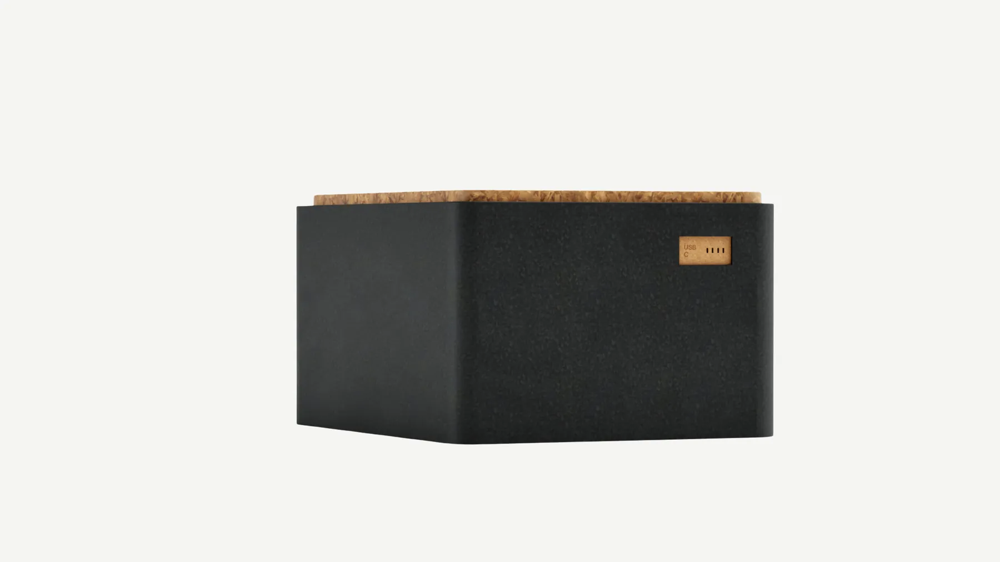
Structure
Un module pentagonal qui s’assemble selon le lieu.
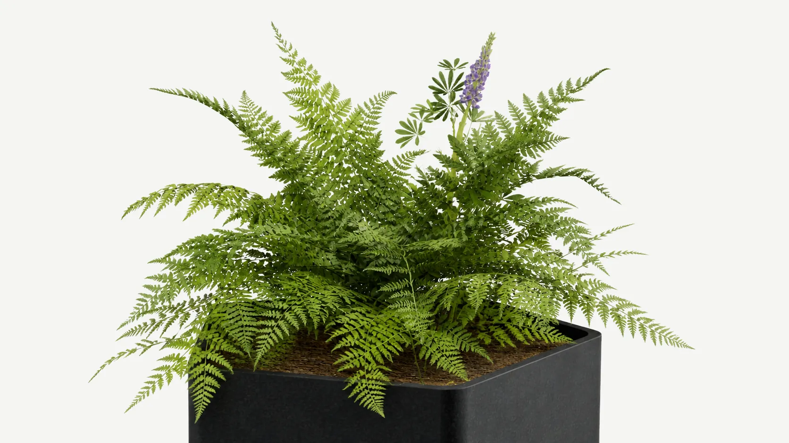

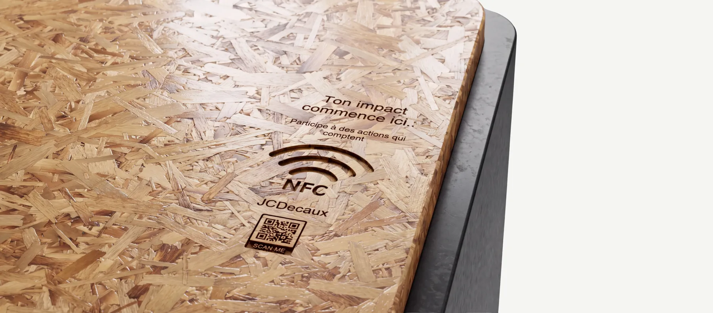
Borne NFC
« Ton impact commence ici. »
Un geste suffit : approcher son téléphone de la borne pour accéder aux initiatives citoyennes locales.
Prototype
Découpe laser et puce NFC, testés en vrai.
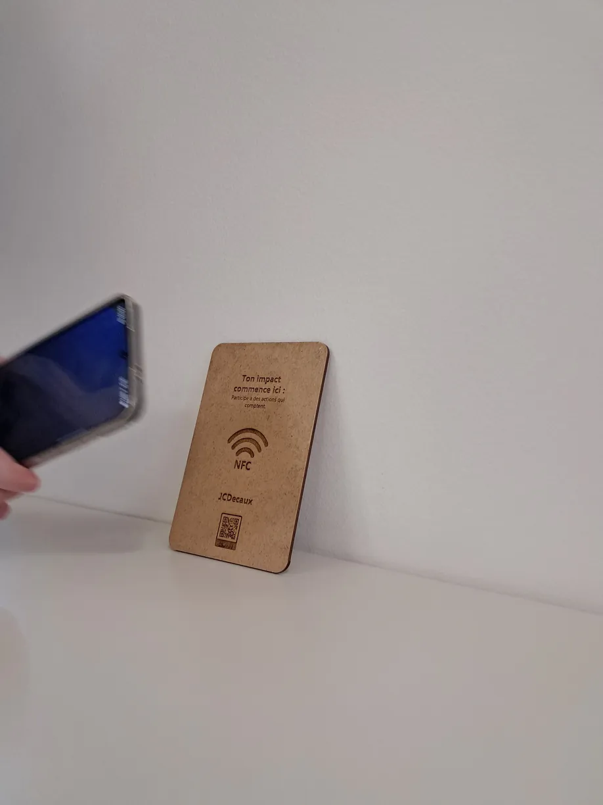
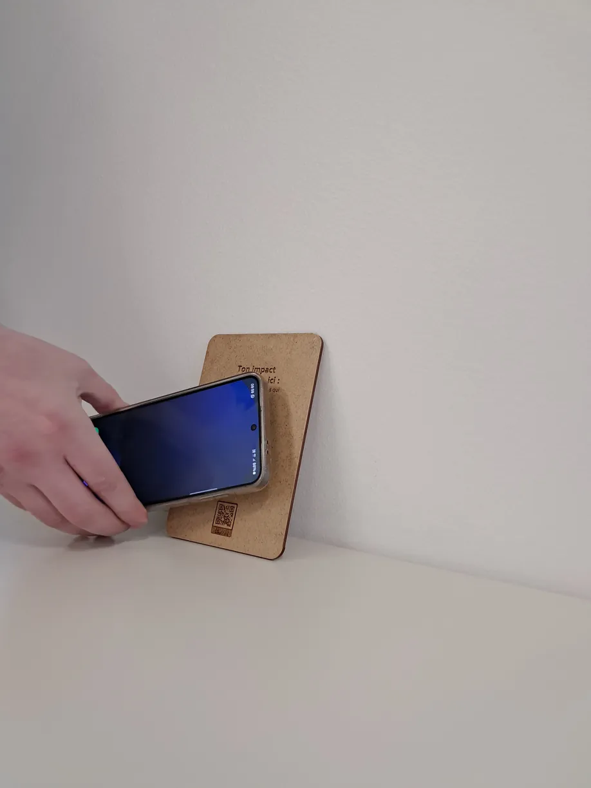
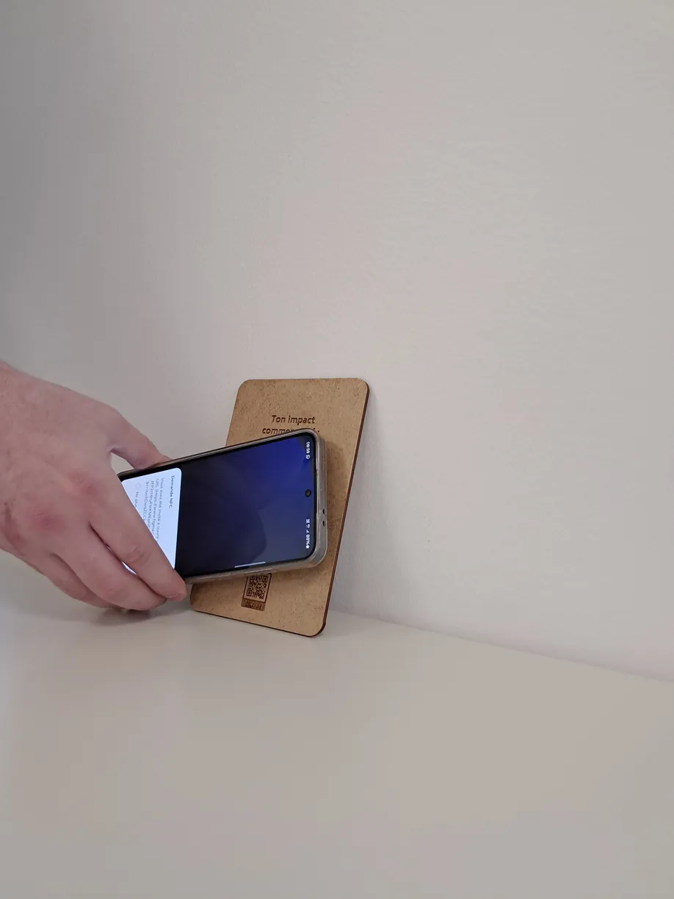
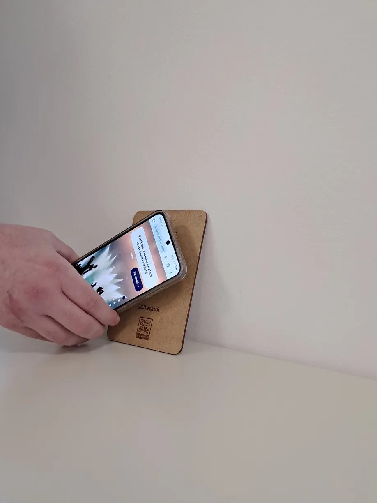
Application
Participer à la reforestation de sa ville.
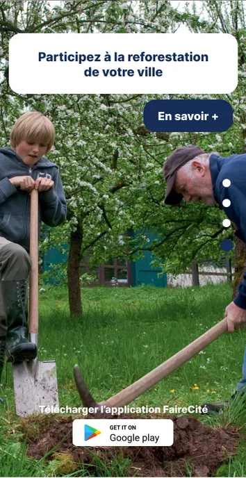
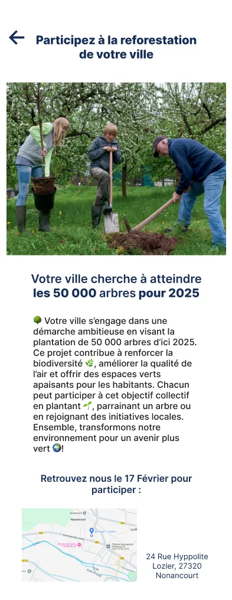
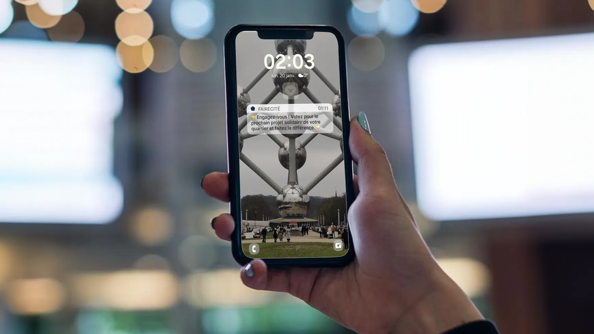
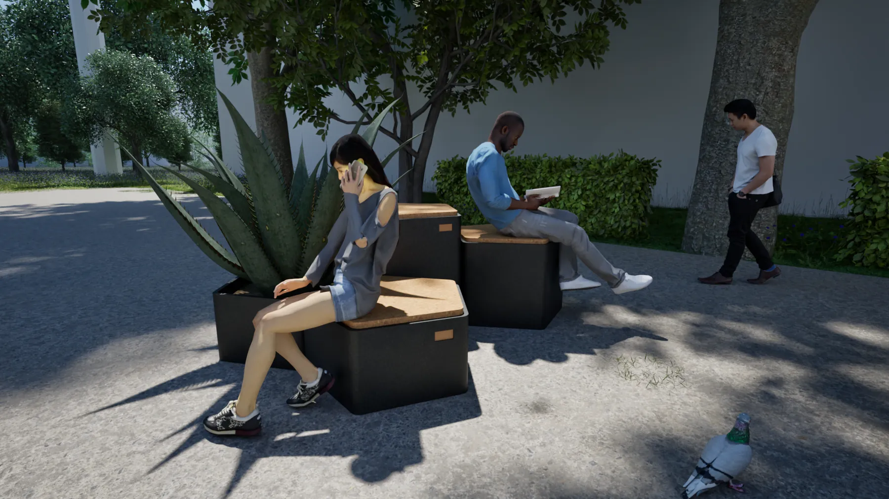